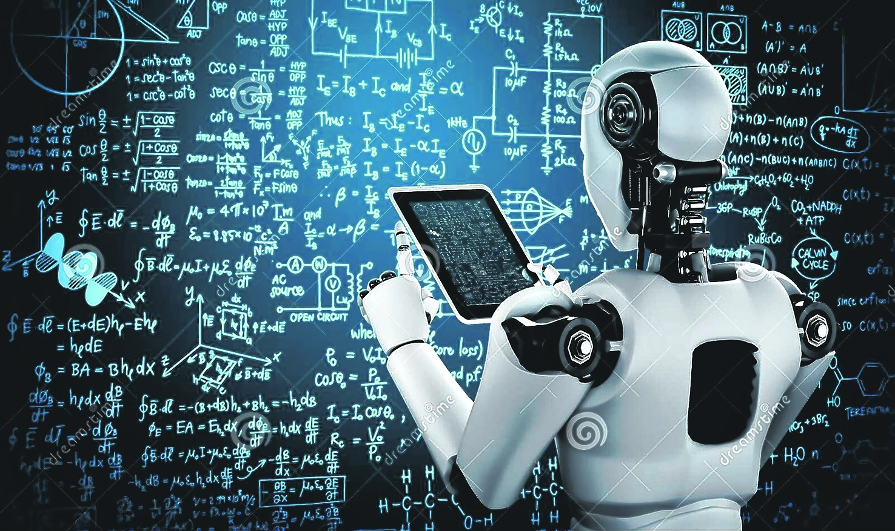
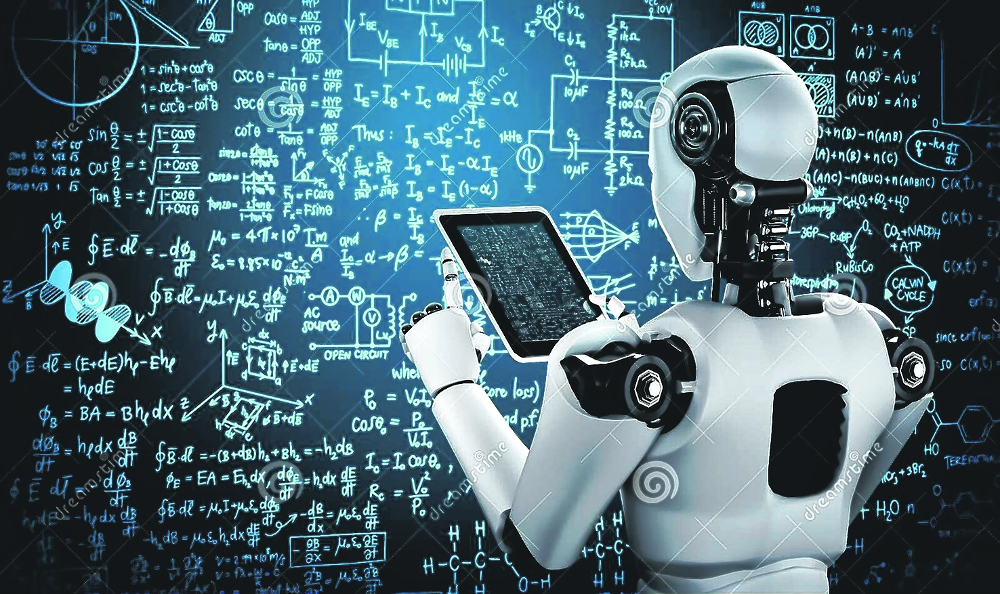

La inteligencia artificial (IA) se refiere a la capacidad de las máquinas o sistemas informáticos para realizar tareas que normalmente requieren inteligencia humana. Estas tareas pueden incluir el reconocimiento de voz, la toma de decisiones, la resolución de problemas, el aprendizaje y la comprensión del lenguaje natural, entre otras cosas. La IA se basa en algoritmos y modelos matemáticos que permiten a las máquinas procesar grandes cantidades de datos y encontrar patrones o realizar inferencias a partir de ellos. La IA puede ser aplicada en una amplia gama de campos, incluyendo la medicina, la robótica, los sistemas de recomendación, los juegos, la automatización industrial y muchos otros.
Las Inteligencias artificiales utilizan algoritmos y modelos matemáticos para procesar grandes cantidades de datos y tomar decisiones basadas en patrones y reglas establecidas a través del aprendizaje automático, que es la capacidad de una máquina para aprender de forma autónoma a partir de datos sin ser programada específicamente para hacerlo. De esta manera la IA puede mejorar su precisión y eficiencia con el tiempo.
 
 La inteligencia artificial (IA) es un campo de la informática que se enfoca en crear sistemas que puedan realizar tareas que normalmente requieren inteligencia humana, como el aprendizaje, el razonamiento y la percepción. Estos sistemas pueden percibir su entorno, razonar sobre el conocimiento, procesar la información derivada de los datos y tomar decisiones para lograr un objetivo dado.
La inteligencia artificial es una rama de la ciencia informática que tiene como objetivo diseñar tecnología que emule la inteligencia humana. Esto significa que, mediante la creación de algoritmos y sistemas especializados, las máquinas pueden llevar a cabo procesos propios de la inteligencia humana, como aprender, razonar o autocorregirse.
La inteligencia artificial se ha utilizado en distintos campos como la robótica, las ciencias de la computación, las finanzas, la salud, los sistemas de transporte autónomos, el mundo de los videojuegos y las comunicaciones. En estos entornos, las máquinas son capaces de manejar grandes cantidades de datos que les permiten desde identificar y comprender comandos verbales e imágenes, hasta realizar cálculos y acciones complejas con una gran rapidez. Estos sistemas, en consecuencia, sirven para percibir su entorno y relacionarse con él, así como también para que actúen con un objetivo específico, después de una recopilación y procesamiento de datos muy exhaustiva. Es decir, se trata de tecnología aplicada para la solución de tareas en el mercado.
Sin duda, la Inteligencia Artificial se perfila como una de las carreras del futuro. Forma a los expertos de la IA, capaces de entenderla en profundidad y desarrollar soluciones que mejoren cada vez más la calidad de vida de las personas.